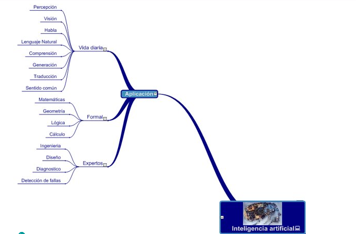

|

VIDA DIARIA
La inteligencia artificial ya está presente en muchas facetas de nuestra vida diaria, y su impacto continúa expandiéndose. Aquí hay algunas formas en las que la IA se aplica en la vida cotidiana:
1. Asistentes Virtuales: Los asistentes virtuales como Siri, Google Assistant y Alexa utilizan inteligencia artificial para responder preguntas, realizar tareas simples como establecer recordatorios y alarmas, y controlar dispositivos domésticos inteligentes.
2. Redes Sociales: Los algoritmos de IA se utilizan para personalizar el contenido que vemos en plataformas de redes sociales como Facebook, Instagram y Twitter, mostrando anuncios, publicaciones y recomendaciones de amigos basadas en nuestros intereses y comportamientos anteriores.
3. Aplicaciones de Traducción: Aplicaciones como Google Translate utilizan IA para traducir texto y voz entre diferentes idiomas de manera rápida y precisa.
4. Filtros de Spam: Los filtros de spam en correos electrónicos y mensajes de texto utilizan IA para identificar y filtrar mensajes no deseados, protegiéndonos de correos electrónicos de phishing y mensajes no deseados.
5. Reconocimiento de Voz: Los sistemas de reconocimiento de voz, como los que se encuentran en teléfonos inteligentes y dispositivos domésticos inteligentes, utilizan IA para convertir el habla en texto y realizar comandos de voz.
6. Recomendaciones de Contenido: Plataformas de streaming como Netflix y Spotify utilizan IA para recomendar películas, programas de televisión, música y podcasts basados en nuestro historial de visualización y escucha.
7. Navegación y Mapas: Aplicaciones de navegación como Google Maps utilizan IA para predecir la duración del viaje, sugerir rutas alternativas y proporcionar información en tiempo real sobre el tráfico y las condiciones del camino.
8. Compras en Línea: Los sistemas de recomendación de productos en sitios web de comercio electrónico utilizan IA para sugerir productos relevantes y personalizados en función de nuestro historial de compras y navegación.
FORMAL
La inteligencia artificial (IA) se está aplicando cada vez más en entornos formales, como empresas, instituciones educativas y gobierno, para mejorar la eficiencia, la precisión y la toma de decisiones:
1. Resolución de Problemas Matemáticos: Los sistemas de inteligencia artificial pueden ser utilizados para resolver problemas matemáticos complejos, tanto en álgebra como en cálculo, proporcionando soluciones y paso a paso.
2. Visualización de Datos Geométricos: En geometría, la inteligencia artificial se utiliza para crear visualizaciones interactivas de datos geométricos, lo que ayuda a los estudiantes y profesionales a comprender conceptos abstractos y explorar propiedades geométricas.
3. Predicción de Series Temporales: En el análisis de datos, incluyendo el cálculo, la inteligencia artificial se utiliza para predecir series temporales, como las tendencias financieras, el clima y la evolución de sistemas dinámicos.
4. Resolución de Problemas de Geometría Computacional: En la geometría computacional, la inteligencia artificial se utiliza para resolver problemas relacionados con la geometría en espacios multidimensionales, como el diseño de algoritmos para calcular la intersección de objetos geométricos.
5. Modelado Matemático y Simulación: La inteligencia artificial se utiliza para crear modelos matemáticos complejos y realizar simulaciones numéricas en una amplia gama de campos, desde la física hasta la biología y la ingeniería.
6. Descubrimiento Automático de Patrones: En el análisis de datos, la inteligencia artificial se utiliza para descubrir patrones ocultos en grandes conjuntos de datos, lo que puede conducir a nuevos descubrimientos en áreas como la teoría de números y la geometría algebraica..
EXPERTOS
La inteligencia artificial se utiliza en diversos campos para ayudar a ampliar y mejorar el conocimiento y las capacidades de los expertos en diferentes áreas:
1. Sistemas de Diagnóstico Médico: Los sistemas de inteligencia artificial, como los sistemas de apoyo al diagnóstico por imágenes, ayudan a los profesionales médicos a identificar y diagnosticar enfermedades basándose en datos de pruebas médicas como imágenes de resonancia magnética (RM), tomografías computarizadas (TC) y radiografías.
2. Asesoramiento Legal: En el campo legal, la inteligencia artificial se utiliza para revisar contratos, analizar documentos legales complejos y proporcionar asesoramiento legal automatizado sobre cuestiones específicas.
3. Análisis Financiero: En el ámbito financiero, la inteligencia artificial se utiliza para predecir tendencias del mercado, identificar oportunidades de inversión, analizar riesgos financieros y optimizar carteras de inversión.
4. Ingeniería y Diseño: En campos como la ingeniería civil y la arquitectura, la inteligencia artificial se utiliza para diseñar y simular estructuras complejas, optimizar diseños y realizar análisis de riesgos.
5. Mantenimiento Predictivo: En la industria manufacturera y en sectores como la aviación y la energía, la inteligencia artificial se utiliza para predecir y evitar fallos de equipos mediante el análisis de datos de rendimiento y mantenimiento.
6. Servicios de Consultoría: Los sistemas de inteligencia artificial se utilizan en servicios de consultoría para proporcionar análisis de datos avanzados, modelado predictivo y recomendaciones basadas en datos para empresas en una variedad de industrias.
7. Gestión de Riesgos: En instituciones financieras y en el sector de seguros, la inteligencia artificial se utiliza para evaluar y gestionar riesgos mediante el análisis de datos financieros, de mercado y de riesgo.
8. Investigación Científica: Los sistemas de inteligencia artificial se utilizan en la investigación científica para analizar grandes conjuntos de datos, simular fenómenos complejos y descubrir patrones y relaciones ocultas en los datos.
9. Agricultura de Precisión: En la agricultura, la inteligencia artificial se utiliza para optimizar el uso de recursos como agua, fertilizantes y pesticidas, y para predecir rendimientos de cultivos basados en datos climáticos y de suelo.
10. Análisis de Datos Geoespaciales: En campos como la cartografía, la geología y la gestión de recursos naturales, la inteligencia artificial se utiliza para analizar datos geoespaciales y realizar modelado predictivo para una variedad de aplicaciones..
|